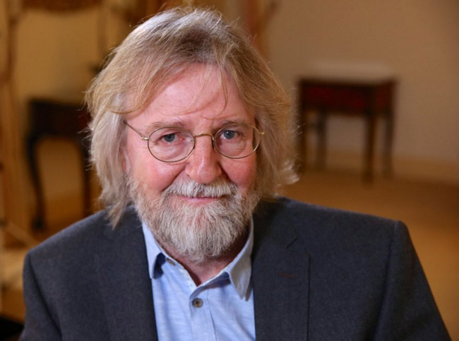
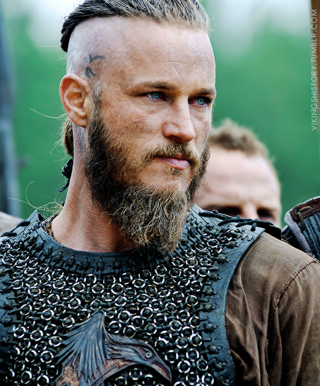
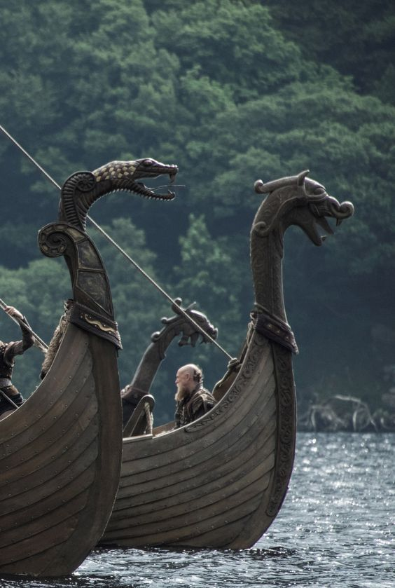
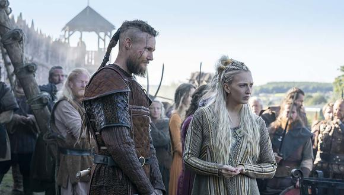
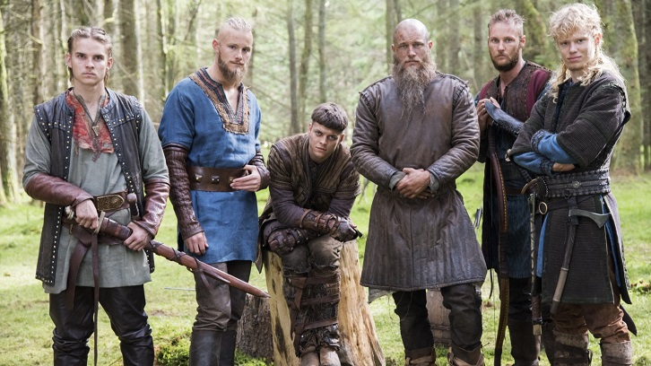

Vikings es una serie de televisión de drama histórico creada y escrita por Michael Hirst para el canal History. Filmada en Irlanda, se estrenó el 3 de marzo de 2013 y concluyó el 30 de diciembre de 2020 tras seis temporadas y un total de 89 episodios.
Vikings está inspirada en las sagas del vikingo Ragnar Lodbrok, uno de los héroes nórdicos legendarios más conocidos y notorio como el flagelo de Inglaterra y Francia.
El programa retrata a Ragnar como un granjero que ha conseguido construir barcos revolucionarios con instrumentos de navegación también revolucionarios.
Con ellas puede hacer exitosas incursiones en Inglaterra, alcanzar la fama y convertirse en un rey escandinavo, con la ayuda de su familia y sus guerreros.
En las últimas temporadas, la serie sigue la fortuna de sus hijos y sus aventuras en Inglaterra, Escandinavia y el Mediterráneo.
